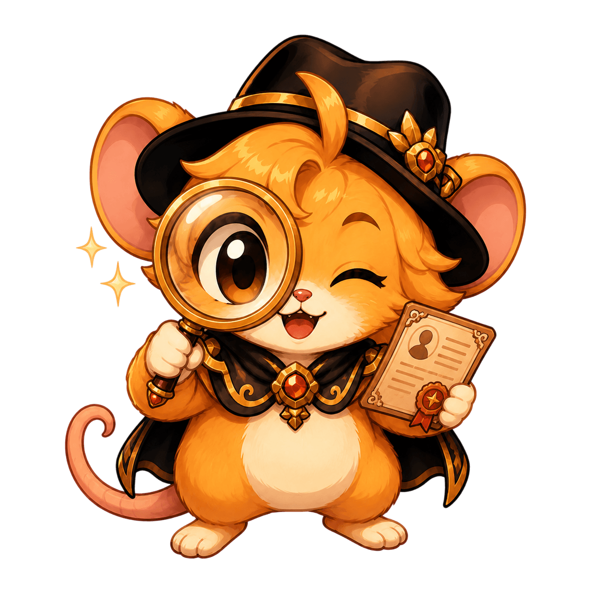

Buscar Ficha
Perfil do Guardião
Digite seu nick para consultar posição, presença, dano atual, média histórica, percentual evolutivo e patente registrada.
Busque sua ficha.
Digite seu nick para consultar dano atual, média histórica, percentual evolutivo e patente no Portal Avalon.